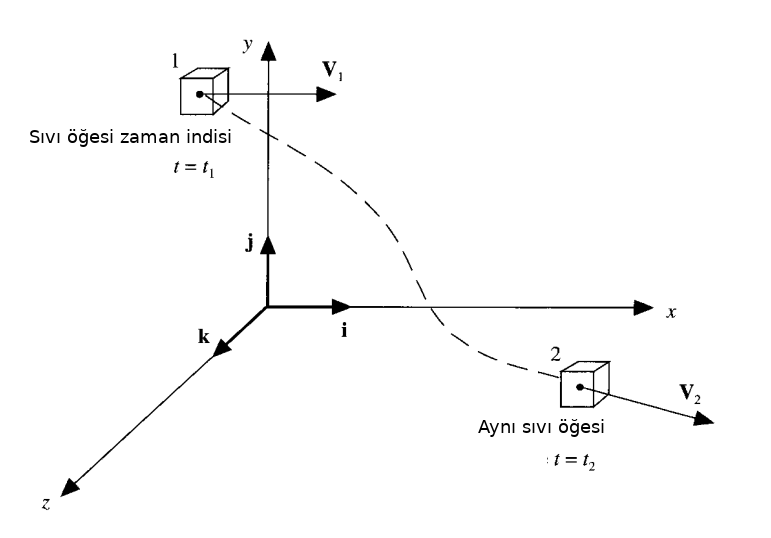
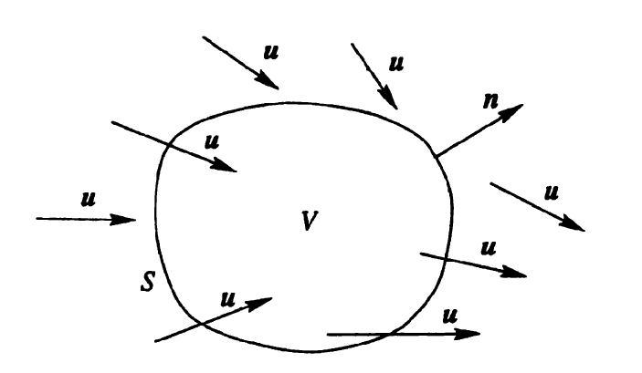

Gazlar, Sıvılar - 1
Euler ve Lagrange, Materyel Türev
Euler ve Lagrange bakış açısı arasındaki farklarla başlayalım. Bu iki bakış açısı bir sıvının dinamiğini nasıl incelediğimiz ile alakalı. Eğer bir nehirdeki kirlilik yoğunluğunu ölçüyorsak mesela, bunu herhangi bir $x,y,z$ noktasında yapabiliriz, ve diyelim ki kirlilik belli bir yerde hiç değişmiyor, ertesi gün gelsek aynı yerde aynı ölçümü alıyoruz [2, sf 78]. Bu yere bağımlı Euler açısı.
Fakat farklı yerlerde farklı ölçümler olabilir, mesela nehir boyunca bir kayık içinde sabit hızda gidersek yoğunluk lineer oranda artıyor. Bu durumda pir paket sıvıyı takip ettiğimizi düşünebiliriz, o paketin açısından elde edilen ölçümler Lagrange bakış açısıdır.
İki bakış açısı arasında gidip gelmenin yolu materyel türev. Böylece Euler bazındaki değişim kullanılarak Lagrange tarifi yapılabiliyor. Bu önemli çünkü ölçümler çoğunlukla Euler formatında düşünülür (bir yerde duran ölçüm aleti idare etmesi ve temsili daha rahat bir kavramdır), ayrıca matematik Euler ortamında biraz daha kolay manipüle edilebilir hale geliyor [3].
Lagrange ile bir parçacık hayal ediyoruz, onu tanımlamanın bir yolu $t=0$ anında nerede olduğu. Daha sonra bu başlangıç noktasındaki sıvı paketinin hangi yolu takip ettiğini $\bar{r}(t)$ ile tarif ediyoruz, ki $\bar{r}(t)$ parametrik bir eğri olarak alabiliriz, $r = ( x(t), y(t), z(t) )$. Eğer bir başlangıç noktasını $a$ olarak tanımlarsak bu başlangıcın ve yol denkleminin bir parçacığı tarif ettiğini düşünebiliriz,

Herhangi bir ölçümü alalım [4], biraz önce kirlilik örneği verdik, bu sıcaklık ta olabilirdi, ölçüm $F(t,x,y,z)$ olsun, $t$ anında ve $x,y,z$ noktasında yapılan ölçüm, bu ölçüme Calculus'un Zincirleme Kuralını uygularsak, değişim oranını materyel türev $D F / Dt$'yi nasıl elde edebileceğimizi görebiliriz,
$$ \frac{D F}{D t} = \frac{\partial F}{\partial t} + \frac{\partial F}{\partial x} \frac{\partial x}{\partial t} + \frac{\partial F}{\partial y} \frac{\partial y}{\partial t} + \frac{\partial F}{\partial z} \frac{\partial z}{\partial t} $$
$(\frac{\partial x}{\partial t}, \frac{\partial y}{\partial t},\frac{\partial z}{\partial t})$ hız olarak görülebilir, ona $\bar{u} = (u,v,w)$ vektörü diyelim,
$$ \frac{D F}{D t} = \frac{\partial F}{\partial t} + \frac{\partial F}{\partial x} u + \frac{\partial F}{\partial y} v + \frac{\partial F}{\partial z} w $$
Ayrica $(\frac{\partial F}{\partial x},\frac{\partial F}{\partial y},\frac{\partial F}{\partial z})$ gradyan vektoru $\nabla F$,
$$ \frac{\partial F}{\partial t} + \bar{u} \cdot \nabla F $$
Burada $\frac{\partial F}{\partial t}$ ölçülen $F$'nin tek, sabit bir yerde zamana göre değişimidir. Bu terime yapılan ekler hareket halindeki parçanın ek olarak göreceği ölçüm değişim oranı olacaktır.
Alınan türev bir operatör olarak görülebilir,
$$ \frac{D ()}{D t} = \frac{\partial () }{\partial t} + \bar{u} \cdot \nabla () $$
Üzerinde operatör uygulanan $()$ içine gider, $F$ için
$$ \frac{D F}{D t} = \frac{\partial F}{\partial t} + \bar{u} \cdot \nabla F $$
ile önceki formüle eriştik.
Şimdi ilginç bir noktaya geldik, süreklilik denklemi (1)'i, $\rho$ ölçümü üzerinde materyel türev uygulanmış formu olarak görmek mümkün,
$$ \frac{D \rho}{D t} + \rho \nabla \cdot \bar{u} = 0 $$
İlginç bir diğer bakış açısı Anderson kitabından [7, sf. 43]. Hız $x,y,z$ noktasında $t$ anındaki $u,v,w$ hız vektörü
$$ u = u(x,y,z,t) $$
$$ v = u(x,y,z,t) $$
$$ w = u(x,y,z,t) $$
ile gösteriliyor olsun, ve bu nokta ve zamandaki yoğunluk $\rho$ ise
$$ \rho = \rho(x,y,z,t) $$
Ufak sıvı hacimlerine bakıyoruz, ve $t_1$ anında 1 noktasındaki öğenin yoğunluğu
$$ \rho_1 = \rho(x_1,y_1,z_1,t_1) $$

Daha sonraki bir $t_2$ anında aynı sıvı öğesi 2 noktasına gitti diyelim, bu noktada yoğunluk
$$ \rho_2 = \rho(x_2,y_2,z_2,t_2) $$
Şimdi 1 noktası etrafında 2 noktasına doğru bir Taylor açılımı yapabiliriz, yüksek dereceli diğer terimler (high-order terms) HOT ile belirterek,
$$ \rho_2 = \rho_1 + \left( \frac{\partial \rho}{\partial x} \right)_1 (x_2-x_1) + \left( \frac{\partial \rho}{\partial y} \right)_1 (y_2-y_1) + \left( \frac{\partial \rho}{\partial z} \right)_1 (z_2-z_1) + \left( \frac{\partial \rho}{\partial t} \right)_1 (t_2-t_1) + HOT $$
$\rho_1$ terimini sol tarafa geçirip her sey $t_2-t_1$ ile bolersek ve HOT'yi yoksayarsak,
$$ \frac{\rho_2-\rho_1}{t_2-t_1} = \left( \frac{\partial \rho}{\partial x} \right)_1 \frac{(x_2-x_1)}{t_2-t_1} + \left( \frac{\partial \rho}{\partial y} \right)_1 \frac{(y_2-y_1)}{t_2-t_1} + \left( \frac{\partial \rho}{\partial z} \right)_1 \frac{(z_2-z_1)}{t_2-t_1} + \left( \frac{\partial \rho}{\partial t} \right)_1 \qquad (3) $$
Eşitliğin sol tarafına dikkat edersek bu sıvının 1 noktasından 2 noktasına giderken deneyimlediği zamanda ortalama değişim değil midir? Limite giderken yani $t_2$ zamanı $t_1$'e sonsuz yaklaştırılırken,
$$ \lim_{t_2 \to t_1} \frac{\rho_2-\rho_1}{t_2-t_1} = \frac{D\rho}{D t} $$
ki burada $D\rho/D t$ sembolü yoğunluğun 1 noktasından geçerken yaşadığı anlık değişimdir.
Yaygın adlandırma kuralları bu sembole maddi, materyel türev (substantial derivative) $D/Dt$ adını verir. Dikkat edelim $D\rho/Dt$ yoğunluğun sıvı öğesi hareket ederken zamana göre değişim oranıdır. Gözlerimiz o sıvı paketine kitlenmiş durumdadır, onu izlemekteyiz, ve 1 noktasında geçerken onun yoğunluğunun değişimini raporlamak istiyoruz. Bu rapor $(\partial \rho / \partial t)_1$'den farklı, burada sabit 1 noktasındaki yoğunluğun zamana göre değişim oranını raporluyoruz. Bu durumda gözler 1 noktasına kitlenmiş durumda, sadece orada olup bitenlerle ilgileniyoruz.
(3) denklemine dönersek, alttakilerin doğru olduğunu bildiğimize göre,
$$ \lim_{t_2 \to t_1} \frac{x_2 - x_1}{t_2 - t_1} \equiv u $$
$$ \lim_{t_2 \to t_1} \frac{y_2 - y_1}{t_2 - t_1} \equiv v $$
$$ \lim_{t_2 \to t_1} \frac{z_2 - z_1}{t_2 - t_1} \equiv w $$
o zaman (3) denkleminin tamamını $t_2 \to t_1$ ile limite götürdüğümüzde
$$ \frac{D\rho}{D t} = u \frac{\partial \rho}{\partial x} + v \frac{\partial \rho}{\partial y} + w \frac{\partial \rho}{\partial z} + \frac{\partial \rho}{\partial t} $$
ifadesini elde ederiz. Bu ifadeyi genelleştirerek bir operatör haline de getirebiliriz,
$$ \frac{D}{D t} = u \frac{\partial }{\partial x} + v \frac{\partial }{\partial y} + w \frac{\partial }{\partial z} + \frac{\partial \rho}{\partial t} $$
Kütle Muhafazası, Süreklilik Formülü (Continuity Equation)
Ufak bir kutu ya da hacim ögesi hayal edelim [4, 7 sf. 50, 8 sf. 10, 10 sf. 404, 12 sf 95, 11 sf. 9], kenarları çok küçük $\Delta x$, $\Delta y$, $\Delta z$ boyutlarında, ve bu kutu uzayda sabitlenmiş, içinden sıvı akıyor. Sabitlenmiş bir noktada olanlara baktığımız için bu Euler bakış açısı, detaylarını ileride göreceğiz. Neyse, şimdi sadece $x$ yönündeki kütle değişimine bakalım,

Sıvının akış hızı $u(x,y,z) = (u,v,w)$, ve yoğunluğu $\rho$ olsun. Birim zamanda içeri akan net kütleyi giren eksi çıkan kütle olarak hesaplayacağız. Bu zamanda $x$ yönünde akış kenarları $\Delta y$, $\Delta z$ ve $u(x,y,z)$ (ufak dik duran bir pizza kutusu gibi) olan bir kesit düşünebilir. Bu birim zamandaki akış hacmi. Onu yoğunluk ile çarpınca kütle elde edilir, aynı şeyi $x + \Delta x$ noktası için de yaparız, ve farklarını alırız,
$$ \rho(x,y,z)u(x,y,z)\Delta y \Delta z - \rho(x+\Delta x,y,z) u(x+\Delta x,y,z)\Delta y \Delta z $$
Üstteki formüldeki bir bölüm bir kısmi türevi andırıyor, $\Delta x$ ile bölüp çarpsak,
$$ = \frac{\rho(x,y,z)u(x,y,z)}{\Delta x}\Delta x \Delta y \Delta z - \frac{\rho(x+\Delta x,y,z) u(x+\Delta x,y,z)}{\Delta x} \Delta x \Delta y \Delta z $$
Evet iki bölme işlemini yaklaşıksal kısmi türev olarak görebiliriz,
$$ \approx -\frac{\partial (\rho u) }{\partial x} \Delta x \Delta y \Delta z $$
Benzer işlemi tüm eksenler için ayrı ayrı yapsak onlar için de kısmi türevler elde ederdik, o zaman tüm eksenler üzerinden olan değişim, ve farksal hacmi $\Delta V = \Delta x \Delta y \Delta z$ olarak göstererek,
$$ \left( -\frac{\partial (\rho u) }{\partial x} -\frac{\partial (\rho u) }{\partial y} -\frac{\partial (\rho u) }{\partial z} \right) \Delta V $$
Üstteki gradyan vektörsel olarak daha rahat ifade edilebilir,
$$ = -\nabla \cdot (\rho \bar{u} ) \Delta V $$
Birim zamandaki kütle artışı buna eşit. Üstteki ifadeyi farklı bir açıdan, birim zamandaki kütle (yoğunluk çarpı hacim) artışı olarak, şöyle de belirtebilirdik,
$$ \frac{\partial }{\partial t} (\rho \Delta V) $$
Bu formül iki üstteki formül ile eşit olmalı. Ayrıca her iki tarafta $\Delta V$ var, çıkartılabilir, zaten sabit bir hacim, sonuç,
$$ \frac{\partial \rho}{\partial t} = -\nabla \cdot (\rho \bar{u} ) $$
Literatürde çoğunlukla şu formda gösterilir,
$$ \frac{\partial \rho}{\partial t} + \nabla \cdot (\rho \bar{u} ) = 0 \qquad (1) $$
Bu denkleme süreklilik formülü (continuity equation) ya da kütle muhafaza kanunu (mass convervation law) ismi veriliyor.
Bilinen Vektör Calculus eşitliğinden hareketle
$$ \frac{\partial \rho}{\partial t} + \bar{u} \cdot \nabla \rho + \rho \cdot \nabla \bar{u} = 0 $$
Eğer bir sıvı sıkıştırılamaz (incompressible) ise, ki pek çok sıvı dinamiği simülasyonlarında böyle olduğu kabul edilir, o zaman $\rho = sabit$ demektir, $\frac{\partial \rho}{\partial t} = 0 $ olur, değişim yok, süreklilik formülünden geri kalan
$$ \nabla \cdot \bar{u} = 0 \qquad (2) $$
olacaktır. $\nabla \cdot$ sembolünün uzaklaşım, ya da $\mathrm{div}$ olduğunu hatırlayalım, ve uzaklaşım yaklaşık olarak bir bölgeye giren eksi çıkan akışı gösterir, ve sıkıştırılamaz durumda uzaklaşımın sıfır olması mantıklı.
$\rho \bar{u}$ büyüklüğüne kütle akışı diyebiliriz, kütlenin ne hızla aktığını gösterir. Uzaklaşım, akımın bir bölgede nasıl yayıldığını gösteriyorsa (bazı durumlarda sanki orada bir su / sıvı kaynağı varmış gibi) o zaman süreklilik formülünün fiziksel olarak şunu söylüyor denebilir; bir sıvının bir bölgedeki yoğunluk değişimi o bölgeye giren ve çıkan akımların sonucudur.
Uzaklaşım Teorisi İle Muhafaza Kanunları
Kütle muhafaza kanununa değişik bir yönden erişmek mümkün. $\rho(r, t)$ yoğunluğuna sahip bir sıvı olsun, ve bu sıvının akışını $u(r, t)$ ile temsil ediyoruz, bu bir hız, akış alanı. Şimdi uzayda sabitlenmiş rasgele bir $V$ hacmi düşünelim, yüzeyi $S$ ve her noktadaki normali $n$, ki $r,n$ vektör değerleri. O zaman $V$ içindeki sıvının toplam kütlesi $\rho$'nun entegrali olacaktır [5, sf. 86],

$$ V \textrm{ içindeki kütle} = \iiint_V \rho \mathrm{d} v $$
Kütlenin bu hacme giriş oranı nedir? Bu oran akış ve hacmin yüzeyi üzerinden bir yüzey entegrali olmalı,
$$ V \textrm{ hacmine kütle giriş oranı} = - \iint_S \rho u \cdot n \mathrm{d} S $$
Eksi işareti var çünkü normal yüzeyden dışarı doğru işaret ediyor.
Şimdi kütlenin muhafaza edilme fiziksel şartını uyguluyabiliriz. $V$ içindeki kütle değişim oranı kütlenin $V$'ye giriş oranına eşit olmalı diyoruz. İlk ifade için kütle hesabının zaman üzerinden türevini alıyoruz, ve ikinci ifadeye eşitliyoruz,
$$ \frac{\mathrm{d}}{\mathrm{d} t} \iiint_V \rho \mathrm{d} V = - \iint_S \rho u \cdot n \mathrm{d} S $$
Uzaklaşım Teorisi ile eşitliğin sağındaki yüzey entegrali bir hacim entegraline çevirilebilir. Ayrıca eşitliğin solundaki türev ve entegral sırası arasında değiş tokuş olabilir,
$$ \iiint_V \frac{\partial \rho}{\partial t} \mathrm{d} V = - \iiint_V \nabla \cdot (\rho u ) \mathrm{d} V $$
Türev entegral içine geçince bir kısmi türev haline geldi çünkü $\rho$ hem zaman hem yere bağımlı bir fonksiyondur.
Üstteki iki entegral artık birleştirilebilir,
$$ \iiint_V \frac{\partial \rho}{\partial t} + \nabla \cdot (\rho u ) \mathrm{d} V = 0 $$
Dikkat edersek bu hesap $V$ üzerinde hiçbir kısıtlama konulmadan elde edildi, bu sebeple herhangi bir $V$ için doğru olacaktır. O zaman üstteki ifadenin, yani entegralin sıfıra eşit olmasının doğru olması için entegral içindeki terim sıfır olmalıdır, yani
$$ \frac{\partial \rho}{\partial t} + \nabla \cdot (\rho u ) = 0 $$
Not: Muhakkak entegre edilen şey her yerde sıfır olmasa bile entegral hesabının sıfır sonucu verdiği durumlar vardır. Mesela $\sin x$'i 0 ile $2\pi$ arasında entegre etmek gibi, fonksiyon bazen negatif, bazen pozitif, her iki kısım dengeli ve entegral sıfır [2, sf. 63]. Fakat üstte belirttiğimiz gibi entegral aldığımız alan $V$ rasgele seçildi. Bu hacmi büyük, küçük, seçebilirdim, başka bir yere taşıyabilirdim. Bu durum için entegralin her zaman sıfır vermesinin tek yolu entegrali alınan şeyin sıfır olmasıdır. Ya da bir çelişki ile ispat argümanı kullanırsak, eğer entegrali alınan ifadenin sıfır olmadığı bir yer olsaydı, hacmi onun etrafına odaklayarak üstteki eşitliğe ters düşebilirdim. O zaman entegre edilen her yerde sıfır olmalı.
Kaynaklar
[1] Aerodynamics for Engineering Students
[2] Storey, Fluid Dynamics
[3] Lumley, Eulerian and Lagrangian Descriptions in Fluid Mechanics, https://www.youtube.com/watch?v=XDrt-uATAY8
[4] Berloff, Introduction to Geophysical Fluid Dynamics, https://wwwf.imperial.ac.uk/~pberloff/gfd_lectures.pdf
[5] Matthews, Vector Calculus
[6] Bayramlı, Cok Boyutlu Calculus, Ders 28,29
[7] Anderson, Computational Fluid Dynamics, the basics with applications
[8] Liu, Particle Methods for Multi-scale and Multi-physics
[10] Kreyzig, Advanced Engineering Mathematics, 10th Edition
[11] Mathematics, Numerics, Derivations, and OpenFOAM
[12] Introduction to Atmospheric Physics, 2nd Edition
[13] Hesthaven, Numerical Methods for Conservation Laws